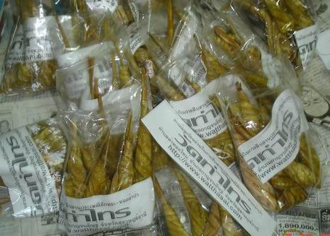
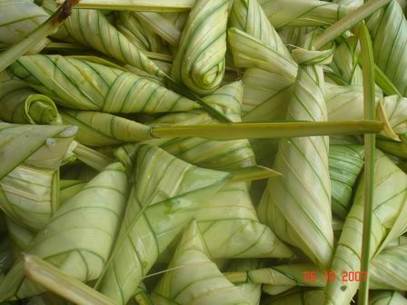
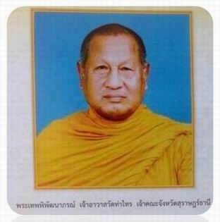
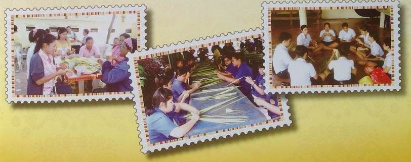

|

ขนมต้ม เป็นขนมประจำงานประเพณีชักพระ ที่มีความเป็นมาอันยาวนาน
จากพุทธตำนาน ตอนที่พระพุทธเจ้าเสด็จกลับจากวรรค์ชั้นดาวดึงส์
พุทธศาสนิกชนได้รับทราบกำหนดการเสด็จกลับของพระพุทธองค์ จึงได้มารอรับเสด็จอย่างเนืองแน่น
พร้อมกับเตรียมภัตตาหารไปถวายด้วย แต่เนื่องจากพุทธศาสนิกชนที่มารอรับเสด็จมีจำนวนมาก
จึงไม่สามารถจะเข้าไปถวายภัตตาหารถึงพระพุทธองค์ได้ทั่วทุกคน จึงจำเป็นต้องเอาภัตตาหารห่อใบไม้ส่งต่อๆกันเข้าไปถวาย
ส่วนคนที่อยู่ไกลออกไปมาก ๆ จะส่งต่อก็ไม่ทันใจ จึงใช้วิธีห่อภัตตาหารด้วยใบไม้แล้วโยนไปใส่บาตรบ้าง
ชาวพุทธ โดยเฉพาะอย่างยิ่งชาวใต้ ได้นำเหตุการณ์ดังกล่าวมาประยุกต์และคิดค้นรูปแบบของขนมที่สอดคล้องกับพุทธประวัติตอนดังกล่าวขึ้น
เรียกว่า "ขนมต้ม" ลักษณะการทำจะใช้ข้าวเหนียวผัดกับน้ำกะทิ
เกลือ น้ำตาล ผัดให้น้ำกะทิแห้ง แล้วนำไปห่อด้วยยอดใบกระพ้อเป็นรูปสามเหลี่ยมอย่างมิดชิดก่อนนำไปต้มหรือนึ่งจนสุก
บางแห่งเรียกขนมต้มนี้ว่า "ข้าวต้มลูกโยน"
วัตถุประสงค์ของการทำขนมต้ม เพื่อทำบุญเรือพระ ถวายแด่พระสงฆ์
และแจกจ่ายให้แก่คนลากพระและเพื่อนบ้าน ซึ่งนับเป็นการทำบุญและทำทานไปในคราวเดียวกัน
ปัจจุบันการทำขนมต้มในระดับครัวเรือนมีน้อยลง เนื่องจากสภาพสังคมเปลี่ยนไป
ส่งผลให้แต่ละครัวเรือนไม่สะดวกจะทำขนมต้ม แต่ชาวสุราษฎร์ธานียังยึดมั่นในการทำใช้ขนมต้มในการทำบุญในงานประเพณีชักพระ-ทอดผ้าป่าอย่างต่อเนื่อง
ที่มาของขนมต้มในปัจจุบันอาจมาจากซื้อจากตลาดมากกว่าทำเองในครัวเรือน

แม้ว่าการทำขนมต้มในระดับครัวเรือนจะลดน้อยลง แต่วัดต่าง ๆ ที่ทำเรือพระยังคงสืบสานการทำขนมต้มในระดับชุมชนไว้
เนื่องจากการเคลื่อนเรือพนมพระสู่เป้าหมายจะต้องใช้คนเป็นจำนวนมากและใช้เวลานาน
วัดจึงจัดทำขนมต้มสำหรับไว้เลี้ยงคณะลากเรือพระ ขนมต้มเป็นข้าวเหนียวจึงสามารถลดความหิวให้แก่คณะได้เป็นอย่างดี
นอกจากนั้นแล้ววัดต่าง ๆ ยังทำมาเผื่อสำหรับบุคคลทั่วไปด้วย เพื่อแสดงถึงความมีน้ำใจของชาวหมู่บ้านที่มากับเรือพระ
การทำขนมต้มในระดับชุมชนของวัดต่าง ๆ โดยวัดจะหาเจ้าภาพจัดหาข้าวเหนียว
น้ำตาล ใบกระพ้อ ฯลฯ และเชิญชวนคนใกล้วัดมาช่วยกันห่อขนมต้มก่อนถึงวันชักพระ
ปัจจุบันวัดที่ทำขนมต้มสำหรับคณะเรือพระ และพุทธศาสนิกชนอื่น ๆ
ที่เด่นชัดที่สุดคือ "วัดท่าไทร ต.ท่าทองใหม่ อ.กาญจนดิษฐ์
จ.สุราษฎร์ธานี" ซึ่งมี พระเทพพิพัฒนาภรณ์ เจ้าคณะจังหวัดสุราษฎร์ธานี
เป็นเจ้าอาวาส ได้ทำขนมต้มสำหรับสนับสนุนงานชักพระของจังหวัดสุราษฎร์ธานี
และได้จัดให้มีประเพณี "ห่อข้าวต้มลูกโยนวัดท่าไทร"
ขึ้น

การริเริ่มประเพณีห่อข้าวต้มลูกโยนของวัดท่าไทร น่าจะจัดขึ้นมาพร้อมกับการจัดให้มีงานประเพณีชักพระ-ทอดผ้าป่าของวัดท่าไทร
แต่ที่จัดเป็นกิจกรรมใหญ่โตเด่นชัดที่สุด ก็เมื่อปี พ.ศ.๒๕๒๕ พระเทพพิพัฒนาภรณ์
เจ้าอวาสรูปปัจจุบัน ได้เชิญชวนพุทธบริษัทร่วมกันจัดทำข้าวต้มลูกโยนอย่างจริงจังขึ้นและจัดทำเรื่อยมาจนกระทั่งปัจจุบัน
โดยในแต่ละปี จะใช้ "ข้าวสารเหนียว เขี้ยวงู" ประมาณ
๖๔-๙๙ ถัง ตามโอกาสที่เห็นสมควร ในแต่ละปีจะมีชาวบ้านหลายร้อยคนจากหลายอำเภอทั้งใกล้และไกล
และจากต่างจังหวัดได้มาช่วยกันทำขนมต้มในวัดท่าไทร ในวันขึ้น ๑๔-๑๕
ค่ำ เดือน ๑๑ ตั้งแต่เช้ามืดจนดึก เพื่ออนุรักษ์ประเพณี เพื่อฝึกเยาวชนและประชาชนให้รู้จักห่อข้าวต้มลูกโยน
เพื่อความสามัคคีของประชาชน และเพื่อนำไปแจกจ่ายให้ประชาชนที่มาร่วมงานและทำบุญในงานประเพณีชักพระ-ทอดผ้าป่าและแข่งเรือยาวของจังหวัดสุราษฎร์ธานี
จนกระทั่งมีคำพูดกันว่า "มาร่วมงานชักพระ-ทอดผ้าป่าจังหวัดสุราษฎร์ธานีแล้ว
หากไม่ได้กินขนมต้มก็เหมือนกับไม่ได้มาร่วมงาน" และล่าสุด
ในระยะ ๕ ปีที่ผ่านมา ตั้งแต่ปี ๒๕๕๒-๒๕๕๖ วัดท่าไทรได้กำหนดจัดทำขนมต้มเฉลิมพระเกียรติพระบาทสมเด็จพระเจ้าอยู่หัวฯ
โดยใช้จำนวนถังของข้าวสารเหนียวเขี้ยวงูที่ใช้ในการทำขนมต้ม จำนวน
๘๒,๘๓,๘๔,๘๕ และ ๘๖ ถัง ตามลำดับ
งานประเพณีห่อข้าวต้มลูกโยน(ขนมต้ม) ของวัดท่าไทร ได้มีการสืบสานอย่างต่อเนื่องมายาวนานกว่า
๓๓ ปี ที่เป็นเช่นนี้ก็เพราะศรัทธาและความเอื้ออารี ทั้งของพระเทพพิพัฒนาภรณ์(ชูชาติ
กนฺตวณฺณมหาเถร) พระภิกษุสามเณร ศิษยานุศิษย์วัดท่าไทร และประชาชนพุทธบริษัททั้งใกล้ไกลที่ร่วมเป็นส่วนหนึ่งของการสืบสานประเพณี
"แทงต้ม".. ร่วมคิด ร่วมพูด ร่วมทำ ร่วมเผยแผ่ ร่วมอนุรักษ์
และร่วมบริจาคมะพร้าว ข้าวเหนียว น้ำตาล ถั่ว ใบกระพ้อ แก๊สหุงต้ม
ไม้ฟืน ฯลฯ เพื่อเป็นวัตถุดิบในการผลิตข้าวต้มลูกโยน "มรดกพุทธ
มรดกใต้ มรดกไทย มรดกโลก มรดกมนุษยชาติ" ให้คงอยู่จนกระทั่งปัจจุบัน
ดังนั้น หากจะพูดว่า "ขนมต้ม เป็นขนมแห่งศรัทธาและความเอื้ออารี"
ก็คงจะไม่ไกลเกินจริง

--------
ข้อมูลที่ควรดูเพิ่มเติม
ภาพประเพณีห่อข้าวต้มลูกโยน

--------------
เอกสารอ้างอิง.-
กรมการศาสนา, นางวันดี จันทร์ประดิษฐ์,
นายสุวรรณ กลิ่นพงศ์, พิธีกรรมและประเพณี,กรุงเทพฯ, โรงพิมพ์ชุมนุมสหกรณ์การเกษตรแห่งประเทศไทย
จำกัด,๒๕๕๒
กรมศิลปากร
กองวรรณคดีและประวัติศาสตร์(๒๕๓๗), ประเพณีชักพระ, กรมศิลปากร
กรุงเทพฯ,๒๕๓๗
ครอบครัว
หลาน เหลน โหลน คุณยายพยอม,กำเนิดประเพณีการทอดผ้าป่าของวัดท่าไทร
และของจังหวัดสุราษฎร์ธานี,
ไม่ปรากฏชื่อโรงพิมพ,์ ซึ่งพิมพ์แจกเป็นที่ระลึกในงานประเพณีชักพระทอดผ้าป่าออกพรรษาของวัดท่าไทร
จังหวัดสุราษฎร์ธานี ในวันที่ ๔ พฤศจิกายน ๒๕๕๘.
จังหวัดสุราษฎร์ธานีและเทศบาลเมืองสุราษฎร์ธานี,
สูจิบัตรงานประเพณีชักพระ-ทอดผ้าป่าและแข่งเรือยาว ประจำปี
๒๕๔๖ จังหวัดสุราษฎร์ธานี, โรงพิมพ์สุวรรณอักษร, สุราษฎร์ธานี
๒๕๔๖
นายพร้อม ถาวรสุข, สุนทรพจน์ในงานแห่พระประจำปีของจังหวัดสุราษฎร์ธานี,
๘ ตุลาคม ๒๔๙๒ ซึ่งพิมพ์แจกเป็นที่ระลึกในงานแห่พระประจำปี ของจังหวัดสุราษฎร์ธานี
พ.ศ. ๒๔๙๓, โรงพิมพ์รัตนมีศรี, บ้านดอน สุราษฎร์ธานี, ๒๔๙๓
บุญโฮม ปริปุณณสีโล,พระมหา,
คู่มืออุบาสกอุบาสิกาวัดท่าไทร, สุราษฎร์ธานี, ๒๕๔๐
บุญโฮม ปริปุณณสีโล,พระมหา,ประวัติพระครูดิตถารามคณาศัย(พลวงพ่อชม
คุณาราโม) วัดท่าไทร, สุราษฎร์ธานี, ๒๕๔๓
บุญโฮม ปริปุณณสีโล,พระมหา,ประวัติประเพณีทอดผ้าป่าวัดท่าไทร,
นสพ.กระแสข่าวทักษิณ ปีที่ ๑ ฉบับประจำเดือน พฤศจิกายน ๒๕๔๗ หน้า
๑๒ คอลัมน์ศาสนา
ประเพณีไทย ฉบับพระมหาราชครู,กรุงเทพฯ,
โรงพิมพ์ ลูก ส.ธรรมภักดี, ๒๕๑๘
สมปราชญ์ อัมมะพันธุ์,ประเพณีท้องถิ่นภาคใต้,
กรุงเทพฯ. สำนักพิมพ์โอเดียนสโตร์.๒๕๔๘
สำนักงานวัฒนธรรมจังหวัดสุราษฎร์ธานี.ชักพระ-ทอดผ้าป่าจังหวัดสุราษฎร์ธานี,
โครงการมหัศจรรย์วัฒนธรรมศรีวิชัย ศิลป์ไทย ศิลป์ถิ่น ตามแผนปฏิบัติราชการประจำปี
๒๕๕๗ จังหวัดสุราษฎร์ธานี,๒๕๕๗

กลับไปหน้า
Web วัดท่าไทร
ไป Web สำนักงานเจ้าคณะภาค
๑๖
ไป
Web ศูนย์พัฒนาคุณธรรมภาคใต้
ไป
Web วิทยุชุมชนตำบลท่าทองใหม่
ไป Web ชมรมวีอาร์ร้อยเกาะสุราษฎร์ธานี
|